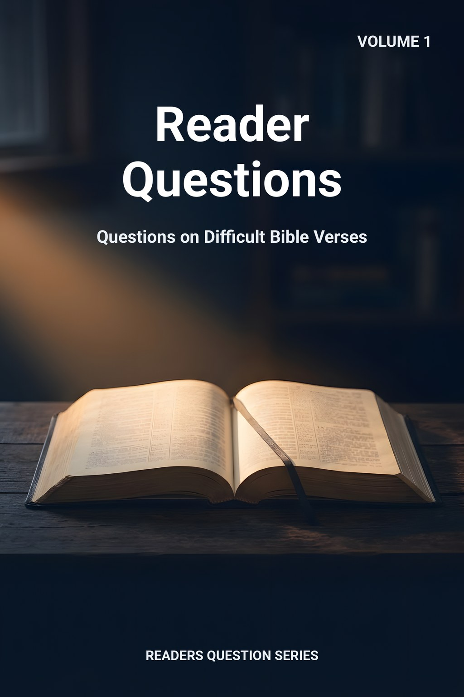
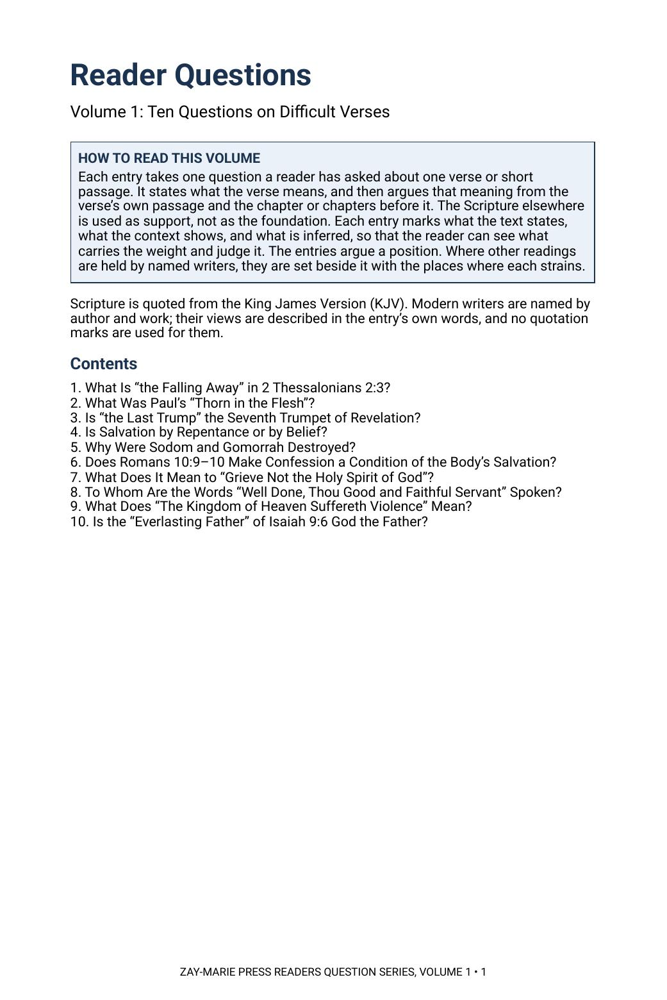
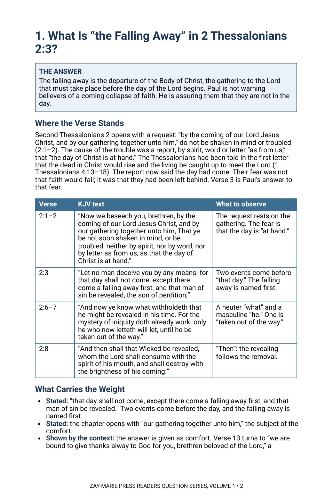

Reader Questions
Questions on Difficult Bible Verses
What does this verse mean, and what in its own chapter says so?
A reader asks about one verse: what is the falling away, what was the thorn, who is the Father in Isaiah 9:6. Each entry gives the answer first, then walks back through the passage and the chapter before it to show why the verse means what it does, and marks every point as stated, shown by the context or inferred.
The entries argue a position and say so. Where named modern writers read a verse differently, their views are set beside the answer, with the place where each reading strains.
One Verse, Argued from Its Own Setting
Each entry answers one question about one verse or short passage. It does not begin with a theory and look for verses to fit; it begins with the verse, reads it in its own passage and in the chapter or chapters before it, and lets the rest of Scripture support what the context shows.
It is the first volume of the Readers Question Series. It is shorter than a Commentary Volume and takes one question at a time, and it is a different kind of book from a Digital Study, which reports what a passage says and leaves the question open. Scripture is quoted from the King James Version throughout. Each entry gives the whole reasoning for its answer.
Related Reading
Digital Studies
Study 74 — The Man of Sin Reports 2 Thessalonians 2 as written; the entry argues a position.
Study 54 — Justification Justification by faith across the passages on salvation.
Study 49 — The Resurrections of Scripture The risings Scripture names, reported as written.
Commentary Series
Prophecy & Mystery, Volume 4 — The Resurrection Order in Scripture Argues the order of the risings across the canon.
Parable Studies
Parable Study — The Talents The parable behind “Well done, thou good and faithful servant.”
Parable Study — The Minas Luke 19’s parable, read in its own setting.
Doctrinal Packets
Doctrinal Packet — 2 Thessalonians Interprets the letter through its key passages in five pages.
Doctrinal Packet — Romans Interprets the book through its key passages in five pages.
Ten Questions, Ten Passages
Prophecy and the Gathering
Follow Paul’s answer to a frightened church in 2 Thessalonians 2, then set the last trump of 1 Corinthians 15 beside the trumpets of Revelation 11.
Paul’s Thorn and Paul’s Salvation
Read 2 Corinthians 10 to 13 for the people the thorn follows, and weigh repentance and belief in Acts and in Paul’s own letters.
Sodom and Its Sin
Hold Genesis 18 and 19, Ezekiel 16 and Jude 7 side by side and ask what each says the city was judged for.
Romans 10 in Its Setting
Read Romans 9 to 11 as written to Israel and ask what verses 9 and 10 are doing there.
Grieving the Spirit, and Servants Rewarded
Follow Ephesians 4 from its calling to its commands, and the parables of Matthew 25 and Luke 19 to the audience each has.
A Violent Kingdom, a Father of Eternity
Read Matthew 11 beside John’s imprisonment, and Isaiah 9 beside the Eliakim of Isaiah 22.
The Ten Questions, Answered in Brief
Open a question to read its short answer. The full entry in the volume gives the whole reasoning, the other readings and the modern writers behind them.
1. What is “the falling away” in 2 Thessalonians 2:3?
Paul means a departure: the gathering of the Body of Christ to the Lord that he names in verse 1. The one who now hinders (verses 6–7) is the Body’s presence and ministry in the world, and when that is taken out of the way the man of sin is revealed and the day of the Lord follows.
The context. Paul opens the passage with “our gathering together unto him” (verse 1) and then says the day of the Lord will not come “except there come a falling away first” (verse 3). The two statements stand in one argument: the Thessalonians feared the day had already come, and Paul answers that something he has already named must come first. The words “the” and “first” point to a definite event, and verse 7 says the one who hinders will do so “until he be taken out of the way.”
2. What was Paul’s “thorn in the flesh”?
The thorn was opposition: a messenger of Satan sent to buffet Paul in his ministry. The Lord’s answer, “My grace is sufficient for thee,” meets the pressure of that opposition, not a bodily illness.
The context. Paul is answering rivals in chapters 10 to 12, men he calls “false apostles, deceitful workers” (11:13) and whose master, he says, is Satan transformed (11:14–15). The thorn comes in the same argument, in the same sentence as the “messenger of Satan to buffet me” (12:7), and the list that follows is of persecutions and distresses (12:10). In Israel’s Scriptures a thorn in the side is a figure for hostile people (Numbers 33:55; Joshua 23:13; Judges 2:3).
3. Is “the last trump” the same as the seventh trumpet of Revelation?
No. The last trump and the trump of God belong to the Body’s gathering, a mystery Paul shows to the Corinthians. The seventh trumpet (Revelation 11:15) sounds in the Tribulation program that Revelation addresses, and Paul never mentions it.
The context. Paul introduces the trumpet with “Behold, I shew you a mystery” (1 Corinthians 15:51), which marks it as something not previously made known. “Last” closes his own sentence, “at the last trump: for the trumpet shall sound,” and nothing in either letter counts a series of trumpets. Revelation 11:15 stands in a book of seals, trumpets and bowls given to the servants of Christ, and it announces the kingdoms of this world becoming the kingdoms of the Lord.
4. Is salvation by repentance or by belief?
The Body is saved by believing the gospel Paul preached, through grace and not of works. Repentance is a change of mind that accompanies believing; the passages that command it do so in their own settings and never as a second ground of salvation.
The context. Paul states the gospel in 1 Corinthians 15:1–4 and the way of salvation in Ephesians 2:8–9: “by grace are ye saved through faith… not of works.” When Acts 2:38 and 3:19 call Israel to repent and be baptized, the setting is Peter’s message to Israel in the kingdom program. Where Paul speaks of repentance, he joins it to faith (“repentance toward God, and faith toward our Lord Jesus Christ,” Acts 20:21), and Romans 2:4 says it is God’s goodness that leads to it.
5. Why were Sodom and Gomorrah destroyed?
Scripture names more than one sin, and none is left out. Genesis gives a great cry and a grievous sin, climaxing in the mob at Lot’s door; Ezekiel names pride, fulness of bread, idleness and neglect of the poor; Jude names fornication and going after strange flesh.
The context. The Lord says the cry of Sodom and Gomorrah “is great” and their sin “very grievous” (Genesis 18:20). In chapter 19 the men of the city, “both old and young,” surround Lot’s house and demand his visitors (19:4–5), and the Lord rains “brimstone and fire” (19:24). Ezekiel 16:49 says “this was the iniquity of thy sister Sodom” and lists pride, fulness of bread and idleness, and verse 50 adds that they committed abomination. Jude 7 and 2 Peter 2:6 hold the cities up as an example.
6. Does Romans 10:9–10 make confession a condition of the Body’s salvation?
No. Romans 10 is addressed to Israel, and verse 9 is Israel’s covenantal salvation formula, drawn from Deuteronomy 30. Confession is Israel’s covenantal expression and has no saving function for the Body, which is saved by belief alone in the gospel Paul preached (1 Corinthians 15:1–4; Ephesians 2:8–9).
The context. Romans 10 opens with Paul’s prayer “for Israel,” and chapters 9 to 11 are his address to Israel. The mouth-and-heart pairing in verse 9 comes from Deuteronomy 30:14, quoted in verse 8, which was spoken to Israel under covenant. Verses 9 and 10 give what Israel is asked to do about its Messiah. The gospel Paul preached to the Body names no mouth-act at all.
7. What does it mean to “grieve not the holy Spirit of God”?
It is a command about conduct. The sins around it in the passage (lying, unrestrained wrath, corrupt speech, bitterness) hurt the Spirit who dwells in the believer, yet the same verse says the believer is “sealed unto the day of redemption,” so grieving affects fellowship and not security.
The context. Verse 30 sits in a list of how the new man lives: truth with the neighbour (4:25), anger that does not sin (4:26), honest labour (4:28) and speech that edifies (4:29). The Spirit is treated as a person who can be grieved, and the reason given is the seal. The passage ends in forgiveness “even as God for Christ’s sake hath forgiven you” (4:32).
8. To whom are the words “Well done, thou good and faithful servant” spoken?
They are the King’s words to faithful servants in Israel’s kingdom, in a parable given on the Mount of Olives. The reward is rule “over many things” and entering “the joy of thy lord”; the passage is not the Body’s judgment seat.
The context. The parable of the talents belongs to a section that begins with the faithful and wise servant (24:45) and ends with the unprofitable servant cast out (25:30), all inside the Lord’s discourse about his coming. Luke’s parallel is told “because they thought that the kingdom of God should immediately appear” (19:11), and its reward is authority over cities (19:17).
9. What does “the kingdom of heaven suffereth violence” mean?
The kingdom has been assaulted since John’s days. John is in prison when the saying is spoken, and the violent who “take it by force” are its opponents, not eager seekers pressing in.
The context. The setting is John’s question from prison (11:2–3) and the Lord’s tribute to him, and the cause of that prison was John’s rebuke of Herod (14:3–5). Luke 16:16 states the same moment differently: “the kingdom of God is preached, and every man presseth into it.” The study reads Matthew’s sentence by its own surroundings.
10. Is the “everlasting Father” of Isaiah 9:6 God the Father?
The title belongs to the child born, who sits on David’s throne (9:7). It names him as a father to his people who does not die, a role Scripture also gives to a faithful steward, “a father to the inhabitants of Jerusalem” (22:21), and does not confuse the Son with the Father.
The context. Isaiah 9 answers the gloom of chapter 8 with a child “born” and a son “given,” whose government has “no end, upon the throne of David” (9:6–7). Names piled on a king are titles of his office: Wonderful, Counsellor, The mighty God, The everlasting Father, The Prince of Peace. Job could say “I was a father to the poor” (Job 29:16).
Read the Word in Its Context
2 Thessalonians 2:3
“Let no man deceive you by any means: for that day shall not come, except there come a falling away first, and that man of sin be revealed, the son of perdition;”
2 Corinthians 12:9
“And he said unto me, My grace is sufficient for thee: for my strength is made perfect in weakness.”
1 Corinthians 15:52
“In a moment, in the twinkling of an eye, at the last trump: for the trumpet shall sound, and the dead shall be raised incorruptible, and we shall be changed.”
Ephesians 2:8–9
“For by grace are ye saved through faith; and that not of yourselves: it is the gift of God: Not of works, lest any man should boast.”
Ephesians 4:30
“And grieve not the holy Spirit of God, whereby ye are sealed unto the day of redemption.”
Matthew 25:21
“His lord said unto him, Well done, thou good and faithful servant: thou hast been faithful over a few things, I will make thee ruler over many things: enter thou into the joy of thy lord.”
Matthew 11:12
“And from the days of John the Baptist until now the kingdom of heaven suffereth violence, and the violent take it by force.”
Isaiah 9:6
“For unto us a child is born, unto us a son is given: and the government shall be upon his shoulder: and his name shall be called Wonderful, Counsellor, The mighty God, The everlasting Father, The Prince of Peace.”
How Each Entry Works
Each entry marks what the text states, what the context shows, and what is inferred, so that the reader can see what carries the weight and judge it.
The entries argue a position, and the other readings are set beside it with the places where each strains.
Preview the Volume Before You Purchase
Click any page to enlarge it for reading.


How to Read This Volume
See the plan of every entry and the ten questions the volume answers.


The First Entry Opens
See an entry begin with its answer, then the question’s setting and the passages quoted in full from the King James Version.
Ten Answers in One Volume
28-Page Digital PDF
Cover and a fully numbered interior.
Ten Full Entries
Each question answered from the verse’s own passage and the chapter before it.
Marked Evidence
Every point marked as stated, shown by the context, or inferred.
KJV Tables
The passages quoted in full, beside what to observe in each.
Other Readings
Named modern writers set beside the answer, with where each strains.
What It Means
What each answer means for the reader.
Related Reading
Studies, commentaries, parables and packets on the same passages.
Modern Writers Referred To
Every writer named, listed by author and work.
Reader Questions, Volume 1
28-page digital PDF · For personal use